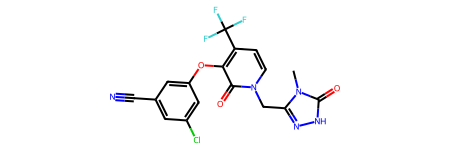

from rdkit import Chem
import rdkit
rdkit.__version__'2022.09.1'December 23, 2022
A question asked on Mastodon made me realize that we don’t have a tutorial anywhere on descriptor calculation. Here’s a first pass at doing that. This will eventually end up in the RDKit documentation
Start by doing the usual imports
A test molecule:
doravirine = Chem.MolFromSmiles('Cn1c(n[nH]c1=O)Cn2ccc(c(c2=O)Oc3cc(cc(c3)Cl)C#N)C(F)(F)F')
doravirine
The Descriptors module has a list of the available descriptors. The list is made of (name, function) 2-tuples:
from rdkit.Chem import Descriptors
print(len(Descriptors._descList))
print(Descriptors._descList[:5])208
[('MaxEStateIndex', <function MaxEStateIndex at 0x7fe4a4f2d1f0>), ('MinEStateIndex', <function MinEStateIndex at 0x7fe4a4f2d280>), ('MaxAbsEStateIndex', <function MaxAbsEStateIndex at 0x7fe4a4f2d310>), ('MinAbsEStateIndex', <function MinAbsEStateIndex at 0x7fe4a4f2d3a0>), ('qed', <function qed at 0x7fe4a4e2e3a0>)]We can use those functions to directly calculate the corresponding descriptor. So, for example, the value of MaxEStateIndex for doravirine is:
As an aside, if we just want a few named descriptors, it’s a lot clearer (and easier to write the code!) if we call the individual descriptor functions directly:
Often we want to calculate all the descriptors. As of the 2022.09 release of the rdkit there’s no real convenience function for descriptor calculation, so let’s create one:
def getMolDescriptors(mol, missingVal=None):
''' calculate the full list of descriptors for a molecule
missingVal is used if the descriptor cannot be calculated
'''
res = {}
for nm,fn in Descriptors._descList:
# some of the descriptor fucntions can throw errors if they fail, catch those here:
try:
val = fn(mol)
except:
# print the error message:
import traceback
traceback.print_exc()
# and set the descriptor value to whatever missingVal is
val = missingVal
res[nm] = val
return res
{'MaxEStateIndex': 13.412553309006833,
'MinEStateIndex': -4.871620672188628,
'MaxAbsEStateIndex': 13.412553309006833,
'MinAbsEStateIndex': 0.045220418860841605,
'qed': 0.6914051268589834,
'MolWt': 425.754,
'HeavyAtomMolWt': 414.66600000000005,
'ExactMolWt': 425.050251552,
'NumValenceElectrons': 150,
'NumRadicalElectrons': 0,
'MaxPartialCharge': 0.4197525104273902,
'MinPartialCharge': -0.45079941098947357,
'MaxAbsPartialCharge': 0.45079941098947357,
'MinAbsPartialCharge': 0.4197525104273902,
'FpDensityMorgan1': 1.3103448275862069,
'FpDensityMorgan2': 2.0344827586206895,
'FpDensityMorgan3': 2.6206896551724137,
'BCUT2D_MWHI': 35.495691906445956,
'BCUT2D_MWLOW': 10.182401353178228,
'BCUT2D_CHGHI': 2.363442602497932,
'BCUT2D_CHGLO': -2.1532454345808123,
'BCUT2D_LOGPHI': 2.362094239067197,
'BCUT2D_LOGPLOW': -2.2620565247489415,
'BCUT2D_MRHI': 6.30376236817795,
'BCUT2D_MRLOW': -0.13831572005086737,
'BalabanJ': 2.1143058157682066,
'BertzCT': 1236.821427505276,
'Chi0': 21.344570503761737,
'Chi0n': 14.619315272563007,
'Chi0v': 15.375244218581463,
'Chi1': 13.595574016164479,
'Chi1n': 7.8933192308003095,
'Chi1v': 8.271283703809537,
'Chi2n': 5.882827756329733,
'Chi2v': 6.319263536801718,
'Chi3n': 3.9307609940961763,
'Chi3v': 4.148978884332168,
'Chi4n': 2.4772835642835087,
'Chi4v': 2.7023697348309867,
'HallKierAlpha': -3.519999999999999,
'Ipc': 2291995.915536308,
'Kappa1': 20.220355828454835,
'Kappa2': 7.4789147435283585,
'Kappa3': 4.168020338062062,
'LabuteASA': 164.8909024413842,
'PEOE_VSA1': 9.303962601591405,
'PEOE_VSA10': 11.3129633249809,
'PEOE_VSA11': 5.824404497999927,
'PEOE_VSA12': 5.749511833283905,
'PEOE_VSA13': 5.559266895052007,
'PEOE_VSA14': 11.86604191564695,
'PEOE_VSA2': 9.361636831863176,
'PEOE_VSA3': 9.893218992372859,
'PEOE_VSA4': 23.531818506063985,
'PEOE_VSA5': 0.0,
'PEOE_VSA6': 11.600939890232516,
'PEOE_VSA7': 24.26546827384644,
'PEOE_VSA8': 18.267148868031594,
'PEOE_VSA9': 18.177429210401844,
'SMR_VSA1': 17.908108096824506,
'SMR_VSA10': 11.600939890232516,
'SMR_VSA2': 5.261891554738487,
'SMR_VSA3': 19.331562912184786,
'SMR_VSA4': 7.04767198267719,
'SMR_VSA5': 12.72105492335605,
'SMR_VSA6': 0.0,
'SMR_VSA7': 73.27433730199388,
'SMR_VSA8': 0.0,
'SMR_VSA9': 17.568244979360085,
'SlogP_VSA1': 15.98587324705553,
'SlogP_VSA10': 13.171245143024459,
'SlogP_VSA11': 11.49902366656781,
'SlogP_VSA12': 11.600939890232516,
'SlogP_VSA2': 19.331562912184786,
'SlogP_VSA3': 19.76872690603324,
'SlogP_VSA4': 11.33111286753076,
'SlogP_VSA5': 16.95130748139392,
'SlogP_VSA6': 40.05138621360316,
'SlogP_VSA7': 5.022633313741326,
'SlogP_VSA8': 0.0,
'SlogP_VSA9': 0.0,
'TPSA': 105.70000000000002,
'EState_VSA1': 28.738272135679853,
'EState_VSA10': 22.760319511168106,
'EState_VSA11': 0.0,
'EState_VSA2': 28.704757542634727,
'EState_VSA3': 6.06636706846161,
'EState_VSA4': 21.397409935657397,
'EState_VSA5': 19.18040611960041,
'EState_VSA6': 6.069221312792274,
'EState_VSA7': 0.0,
'EState_VSA8': 10.197363616602075,
'EState_VSA9': 21.599694398771053,
'VSA_EState1': 47.48050639865553,
'VSA_EState10': 5.842061004535676,
'VSA_EState2': 24.16343117595945,
'VSA_EState3': 14.921853617262808,
'VSA_EState4': -2.8980189732872814,
'VSA_EState5': -1.0781549918202147,
'VSA_EState6': 6.092225491490601,
'VSA_EState7': -3.945179835565914,
'VSA_EState8': -0.2762282865821226,
'VSA_EState9': 1.3919488437959202,
'FractionCSP3': 0.17647058823529413,
'HeavyAtomCount': 29,
'NHOHCount': 1,
'NOCount': 8,
'NumAliphaticCarbocycles': 0,
'NumAliphaticHeterocycles': 0,
'NumAliphaticRings': 0,
'NumAromaticCarbocycles': 1,
'NumAromaticHeterocycles': 2,
'NumAromaticRings': 3,
'NumHAcceptors': 7,
'NumHDonors': 1,
'NumHeteroatoms': 12,
'NumRotatableBonds': 4,
'NumSaturatedCarbocycles': 0,
'NumSaturatedHeterocycles': 0,
'NumSaturatedRings': 0,
'RingCount': 3,
'MolLogP': 2.65458,
'MolMR': 94.87570000000002,
'fr_Al_COO': 0,
'fr_Al_OH': 0,
'fr_Al_OH_noTert': 0,
'fr_ArN': 0,
'fr_Ar_COO': 0,
'fr_Ar_N': 4,
'fr_Ar_NH': 1,
'fr_Ar_OH': 0,
'fr_COO': 0,
'fr_COO2': 0,
'fr_C_O': 0,
'fr_C_O_noCOO': 0,
'fr_C_S': 0,
'fr_HOCCN': 0,
'fr_Imine': 0,
'fr_NH0': 4,
'fr_NH1': 1,
'fr_NH2': 0,
'fr_N_O': 0,
'fr_Ndealkylation1': 0,
'fr_Ndealkylation2': 0,
'fr_Nhpyrrole': 1,
'fr_SH': 0,
'fr_aldehyde': 0,
'fr_alkyl_carbamate': 0,
'fr_alkyl_halide': 3,
'fr_allylic_oxid': 0,
'fr_amide': 0,
'fr_amidine': 0,
'fr_aniline': 0,
'fr_aryl_methyl': 0,
'fr_azide': 0,
'fr_azo': 0,
'fr_barbitur': 0,
'fr_benzene': 1,
'fr_benzodiazepine': 0,
'fr_bicyclic': 0,
'fr_diazo': 0,
'fr_dihydropyridine': 0,
'fr_epoxide': 0,
'fr_ester': 0,
'fr_ether': 1,
'fr_furan': 0,
'fr_guanido': 0,
'fr_halogen': 4,
'fr_hdrzine': 0,
'fr_hdrzone': 0,
'fr_imidazole': 0,
'fr_imide': 0,
'fr_isocyan': 0,
'fr_isothiocyan': 0,
'fr_ketone': 0,
'fr_ketone_Topliss': 0,
'fr_lactam': 0,
'fr_lactone': 0,
'fr_methoxy': 0,
'fr_morpholine': 0,
'fr_nitrile': 1,
'fr_nitro': 0,
'fr_nitro_arom': 0,
'fr_nitro_arom_nonortho': 0,
'fr_nitroso': 0,
'fr_oxazole': 0,
'fr_oxime': 0,
'fr_para_hydroxylation': 0,
'fr_phenol': 0,
'fr_phenol_noOrthoHbond': 0,
'fr_phos_acid': 0,
'fr_phos_ester': 0,
'fr_piperdine': 0,
'fr_piperzine': 0,
'fr_priamide': 0,
'fr_prisulfonamd': 0,
'fr_pyridine': 1,
'fr_quatN': 0,
'fr_sulfide': 0,
'fr_sulfonamd': 0,
'fr_sulfone': 0,
'fr_term_acetylene': 0,
'fr_tetrazole': 0,
'fr_thiazole': 0,
'fr_thiocyan': 0,
'fr_thiophene': 0,
'fr_unbrch_alkane': 0,
'fr_urea': 0}Suppose I want to generate the full set of descriptors for a bunch of molecules…
canonical_smiles molregno activity_id standard_value standard_units
N[C@@H]([C@@H]1CC[C@H](CC1)NS(=O)(=O)c2ccc(F)cc2F)C(=O)N3CC[C@H](F)C3 29272 671631 49000 nM
N[C@@H](C1CCCCC1)C(=O)N2CCSC2 29758 674222 28000 nM
N[C@@H]([C@@H]1CC[C@H](CC1)NC(=O)c2ccc(F)c(F)c2)C(=O)N3CCSC3 29449 675583 5900 nM
N[C@@H]([C@@H]1CC[C@H](CC1)NS(=O)(=O)c2ccc(F)cc2F)C(=O)N3CCCC3 29244 675588 35000 nM
N[C@@H]([C@@H]1CC[C@H](CC1)NS(=O)(=O)c2ccc(OC(F)(F)F)cc2)C(=O)N3CC[C@@H](F)C3 29265 679299 6000 nM
N[C@@H]([C@@H]1CC[C@H](CC1)NS(=O)(=O)c2ccc(F)cc2F)C(=O)N3CC[C@@H](F)C3 29253 679302 52000 nM
N[C@@H]([C@@H]1CC[C@H](CC1)NC(=O)c2ccc(F)c(F)c2)C(=O)N3CCCC3 29482 683566 29000 nM
N[C@@H]([C@@H]1CC[C@H](CC1)NC(=O)c2ccccc2C(F)(F)F)C(=O)N3CCSC3 29340 685042 39000 nM
N[C@@H]([C@@H]1CC[C@H](CC1)NC(=O)OCc2ccccc2)C(=O)N3CC[C@@H](F)C3 29213 685047 43000 nMWe can read in all the molecules using a “Supplier” object, there’s more about this in the documentation
Now calculate the descriptors. This takes a bit (10-20 seconds on my machine) for the ~1100 molecules I read in.
The problem here is that we have a list of dictionaries… that’s not useful for most things. Let’s convert it to a pandas dataframe:
| MaxEStateIndex | MinEStateIndex | MaxAbsEStateIndex | MinAbsEStateIndex | qed | MolWt | HeavyAtomMolWt | ExactMolWt | NumValenceElectrons | NumRadicalElectrons | ... | fr_sulfide | fr_sulfonamd | fr_sulfone | fr_term_acetylene | fr_tetrazole | fr_thiazole | fr_thiocyan | fr_thiophene | fr_unbrch_alkane | fr_urea | |
|---|---|---|---|---|---|---|---|---|---|---|---|---|---|---|---|---|---|---|---|---|---|
| 0 | 13.787943 | -4.120373 | 13.787943 | 0.074317 | 0.759946 | 419.469 | 395.277 | 419.149047 | 156 | 0 | ... | 0 | 1 | 0 | 0 | 0 | 0 | 0 | 0 | 0 | 0 |
| 1 | 12.032152 | -0.232407 | 12.032152 | 0.186944 | 0.777429 | 228.361 | 208.201 | 228.129634 | 86 | 0 | ... | 1 | 0 | 0 | 0 | 0 | 0 | 0 | 0 | 0 | 0 |
| 2 | 13.255664 | -1.036185 | 13.255664 | 0.017845 | 0.835147 | 383.464 | 360.280 | 383.147904 | 142 | 0 | ... | 1 | 0 | 0 | 0 | 0 | 0 | 0 | 0 | 0 | 0 |
| 3 | 13.787093 | -4.072560 | 13.787093 | 0.015196 | 0.786287 | 401.479 | 376.279 | 401.158469 | 150 | 0 | ... | 0 | 1 | 0 | 0 | 0 | 0 | 0 | 0 | 0 | 0 |
| 4 | 13.326286 | -4.859254 | 13.326286 | 0.063966 | 0.625645 | 467.485 | 442.285 | 467.150190 | 174 | 0 | ... | 0 | 1 | 0 | 0 | 0 | 0 | 0 | 0 | 0 | 0 |
5 rows × 208 columns
And now we have something that we could use to build models, filter, etc.